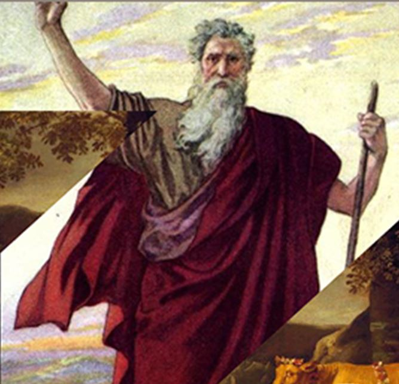

Important People
Important People
| Home | Holidays | Traditions | History | Symbols | Important People |
|---|
Abraham
.jpeg)
For Jews, Abraham is seen as the one from whom all
Jews are descended. Abraham is the father of
Isaac and grandfather of Jacob, who is renamed
Israel and whose 12 sons represent the tribes
of Israel. Abraham is called by God to go. into
a new land and in a covenant.
Moses
 In the Judaic tradition, Moses is revered as
the greatest prophet and teacher. According to
the book of Exodus, he was born in Egypt to Hebrew
parents, who set him afloat on the Nile in a
a read basket to save him from an edict calling
for the death of all newborn Hebrew males.
David

David was the first king in Jerusalem whose reign
was later looked back on as a golden era.
He is known both as a great fighter and as the
"sweet singer of Israel", the source of poems and
songs, some of which are collected in the book of
Psalms. The date of David's enthronement
is approximately 1000 BC.
Solomon

Solomon is known for being the king of Israel who
built the first Temple in Jerusalem. He was
also the second (after his father, David)
and last king of a unified Israel, which
was at the height of its power during his
reign. He is known for stories told
in the Bible about his wisdom.